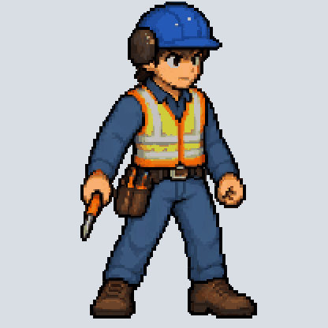
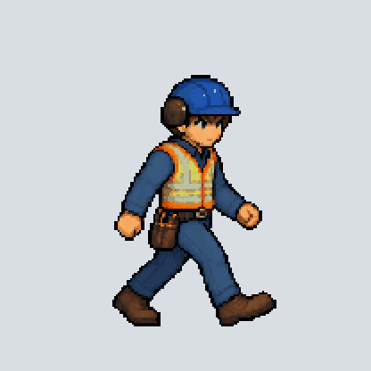

Normal male only so far. These are looping previews of individually rendered frames, not the completed interactive game. Framing has been normalized; motion consistency is still under review. Female cycles will follow.

